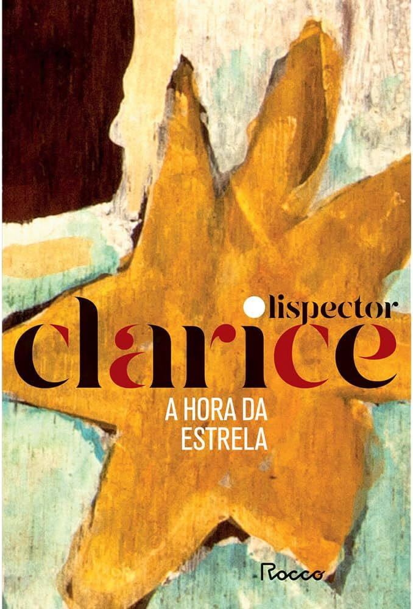
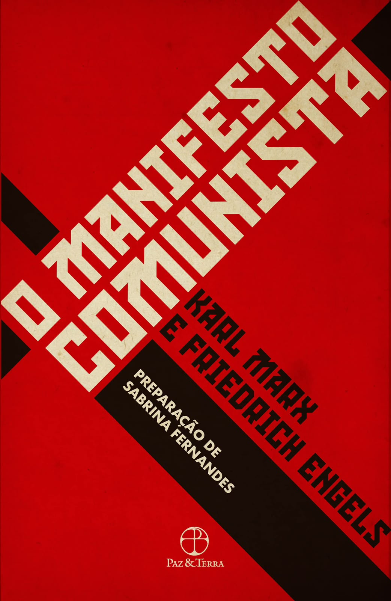
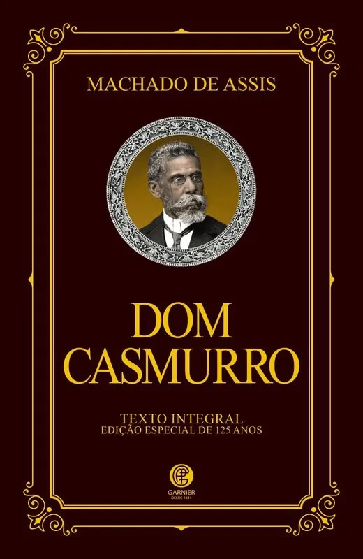
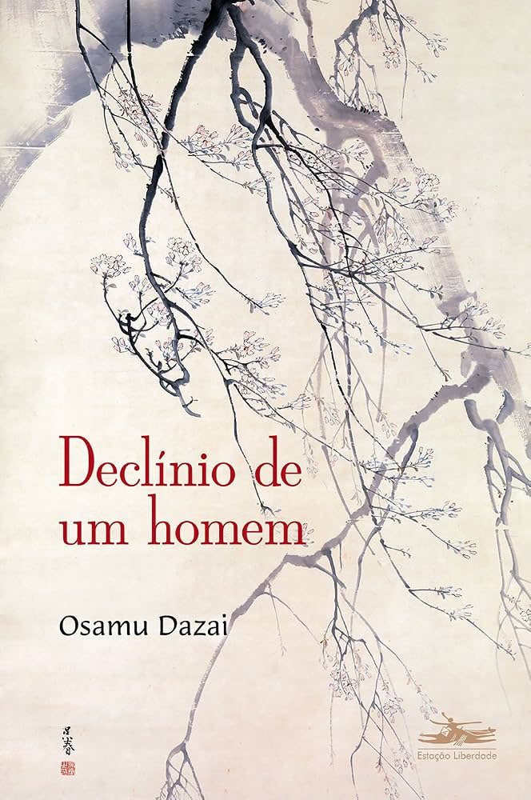

Uma história que retrata a vida simples e difícil de Macabéa, uma jovem nordestina vivendo no Rio de Janeiro.
Uma obra que explora a solidão, a alienação e a transformação de um homem que acorda em uma situação inexplicável.

Uma obra que apresenta ideias sobre as classes sociais, o trabalho e as desigualdades presentes na sociedade.

Um romance marcado por ciúme, memória e dúvidas sobre a relação entre Bentinho e Capitu.

Uma obra que acompanha a trajetória de um homem que enfrenta dificuldades para se encaixar na sociedade.
Um diário que registra o cotidiano, as dificuldades e a desigualdade vivenciada por Carolina na favela do Canindé.
Uma história que retrata a vida simples e difícil de Macabéa, uma jovem nordestina vivendo no Rio de Janeiro.
Uma obra que explora a solidão, a alienação e a transformação de um homem que acorda em uma situação inexplicável.
Uma obra que apresenta ideias sobre as classes sociais, o trabalho e as desigualdades presentes na sociedade.
Um romance marcado por ciúme, memória e dúvidas sobre a relação entre Bentinho e Capitu.
Uma obra que acompanha a trajetória de um homem que enfrenta dificuldades para se encaixar na sociedade.
Um diário que registra o cotidiano, as dificuldades e a desigualdade vivenciada por Carolina na favela do Canindé.
Autor: Machado de Assis
Publicado em 1881, o livro apresenta a história de Brás Cubas depois de sua morte. Com ironia e humor, Machado de Assis critica a sociedade brasileira do século XIX.
Importância: Uma das obras mais importantes do Realismo brasileiro.
Autor: Machado de Assis
O romance acompanha Bentinho e sua relação com Capitu, explorando temas como memória, ciúme, amor e as diferentes formas de interpretar uma história.
Importância: Um dos maiores clássicos da literatura brasileira.
Autor: Graciliano Ramos
A obra acompanha uma família sertaneja que enfrenta a seca, a pobreza e as dificuldades de sobrevivência no Nordeste brasileiro.
Importância: Uma representação marcante da realidade do sertão brasileiro.
Autor: João Guimarães Rosa
A narrativa acompanha Riobaldo em suas experiências pelo sertão. A obra apresenta uma linguagem inovadora e reflexões sobre a vida, o amor, a violência e a existência humana.
Importância: Um dos maiores romances da literatura brasileira.
Autor: Mário de Andrade
A história acompanha Macunaíma, personagem que percorre diferentes regiões do Brasil em uma narrativa que mistura mitos, folclore, humor e elementos da cultura brasileira.
Importância: Uma obra fundamental do Modernismo brasileiro.
Autora: Carolina Maria de Jesus
Escrito em forma de diário, o livro registra experiências de Carolina na favela do Canindé, em São Paulo, mostrando pobreza, desigualdade e o cotidiano de uma comunidade.
Importância: Uma obra fundamental para compreender diferentes aspectos da realidade social brasileira.
Autor: Aluísio Azevedo
A obra retrata a vida dos moradores de um cortiço no Rio de Janeiro do século XIX, apresentando diferentes grupos sociais e suas relações.
Importância: Um dos principais romances do Naturalismo brasileiro.
Autor: Ariano Suassuna
A peça acompanha João Grilo e Chicó em aventuras pelo sertão nordestino, misturando humor, religiosidade, cultura popular e crítica social.
Importância: Uma das obras mais conhecidas do teatro e da cultura popular brasileira.
Autor: Jorge Amado
O romance acompanha um grupo de jovens que vive nas ruas de Salvador e apresenta questões relacionadas à pobreza, abandono e desigualdade social.
Importância: Uma obra importante para compreender questões sociais presentes na sociedade brasileira.
Autora: Clarice Lispector
A história acompanha Macabéa, uma jovem nordestina que vive no Rio de Janeiro e enfrenta uma existência marcada pela simplicidade e invisibilidade social.
Importância: Uma das obras mais conhecidas da literatura brasileira contemporânea.
Autora: Jane Austen
A história acompanha Elizabeth Bennet e sua relação com Mr. Darcy, abordando amor, diferenças sociais e os costumes da sociedade inglesa.
Gênero: Romance
Autor: Gabriel García Márquez
A história acompanha um amor que permanece ao longo dos anos, explorando sentimentos, passagem do tempo e relações humanas.
Gênero: Romance
Autor: Liev Tolstói
O romance acompanha a vida de Anna e seus conflitos amorosos e sociais, explorando relacionamentos, família e sociedade.
Gênero: Romance
Autora: Charlotte Brontë
A obra acompanha Jane Eyre em sua trajetória de vida, apresentando questões relacionadas à independência, sentimentos e posição social.
Gênero: Romance
Autor: J. R. R. Tolkien
Frodo e seus companheiros embarcam em uma jornada para destruir o Um Anel e impedir que ele caia nas mãos do Senhor do Escuro.
Gênero: Fantasia
Autora: J. K. Rowling
Harry descobre que é um bruxo e começa seus estudos em Hogwarts, onde conhece novos amigos e descobre um mundo cheio de magia.
Gênero: Fantasia
Autor: J. R. R. Tolkien
Bilbo Bolseiro embarca em uma aventura ao lado de anões e do mago Gandalf para recuperar um tesouro guardado pelo dragão Smaug.
Gênero: Fantasia
Autor: C. S. Lewis
Crianças descobrem um mundo fantástico chamado Nárnia, onde vivem aventuras ao lado de criaturas mágicas e personagens extraordinários.
Gênero: Fantasia
Autor: Bram Stoker
O romance apresenta o Conde Drácula e mistura suspense, mistério e elementos sobrenaturais em uma das histórias de vampiros mais conhecidas da literatura.
Gênero: Terror
Autora: Mary Shelley
Victor Frankenstein cria uma criatura durante seus experimentos científicos e precisa enfrentar as consequências de sua criação.
Gênero: Terror / Ficção científica
Autor: Robert Louis Stevenson
A obra apresenta o Dr. Jekyll e seu misterioso alter ego, explorando a dualidade da personalidade humana.
Gênero: Terror / Mistério
Autor: Stephen King
Uma família passa um período isolada em um hotel cercado por acontecimentos sobrenaturais e misteriosos.
Gênero: Terror psicológico
Autor: George Orwell
A obra apresenta uma sociedade controlada por um governo totalitário que vigia constantemente seus cidadãos.
Gênero: Distopia
Autor: George Orwell
Os animais de uma fazenda se revoltam contra seus donos e assumem o controle do local. A história apresenta uma crítica política por meio de uma fábula.
Gênero: Distopia / Sátira
Autor: Aldous Huxley
O livro apresenta uma sociedade futurista onde as pessoas são condicionadas desde o nascimento para ocupar diferentes funções na sociedade.
Gênero: Distopia
Autor: Ray Bradbury
Em uma sociedade onde os livros são proibidos, os bombeiros têm a função de destruí-los. A obra discute censura, conhecimento e liberdade.
Gênero: Ficção científica / Distopia
Autor: Carlos Drummond de Andrade
Coletânea de poemas que apresenta uma linguagem marcada pelo cotidiano, pelo humor e por reflexões sobre a vida.
Gênero: Poesia
Autora: Cecília Meireles
A obra utiliza poesia para apresentar personagens, acontecimentos e reflexões relacionadas à Inconfidência Mineira.
Gênero: Poesia histórica
Autor: Castro Alves
Coletânea poética de um dos principais nomes do Romantismo brasileiro, reunindo poemas sobre amor, liberdade e questões sociais.
Gênero: Poesia / Romantismo
Autor: Ferreira Gullar
O poema mistura memória, infância, cidade, política e experiências pessoais do autor em uma extensa narrativa poética.
Gênero: Poesia
Autor: Mark Twain
Tom Sawyer é um garoto curioso que vive diversas aventuras ao lado de seu amigo Huckleberry Finn em uma pequena cidade americana.
Gênero: Aventura
Autor: Robert Louis Stevenson
Jim Hawkins encontra um mapa do tesouro e embarca em uma viagem cheia de piratas, perigos e descobertas.
Gênero: Aventura
Autor: Júlio Verne
Um professor e seu sobrinho embarcam em uma extraordinária expedição para explorar o interior do planeta.
Gênero: Aventura / Ficção científica
Autor: Alexandre Dumas
Edmond Dantès é vítima de uma conspiração e passa anos planejando sua fuga e sua vingança contra aqueles que destruíram sua vida.
Gênero: Aventura / Romance
Autor: Monteiro Lobato
A coleção acompanha personagens como Emília, Narizinho, Pedrinho e Dona Benta em aventuras que misturam fantasia, cultura e imaginação.
Gênero: Literatura infantil
Autora: Cecília Meireles
Coletânea de poemas voltados ao público infantil, explorando brincadeiras, escolhas, sons e situações do cotidiano.
Gênero: Poesia infantil
Autor: Monteiro Lobato
Narizinho vive aventuras fantásticas no Sítio do Picapau Amarelo ao lado de personagens marcantes da literatura infantil brasileira.
Gênero: Literatura infantil
Autora: Ruth Rocha
Marcelo é um menino curioso que questiona os nomes das coisas e inventa novas palavras para explicar o mundo ao seu redor.
Gênero: Literatura infantil